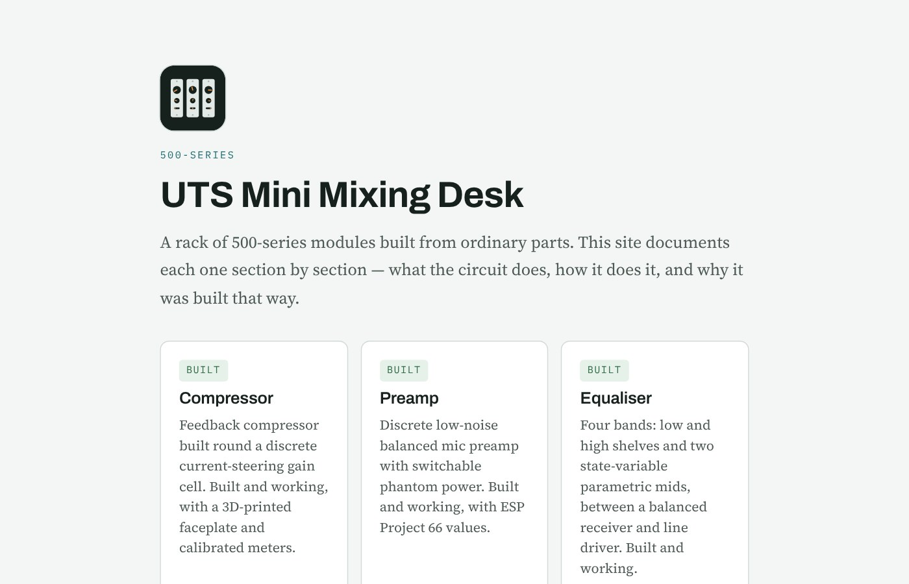

A team project where we designed and built a mini mixing desk out of three 500-series modules: a compressor, a mic preamp and a four-band EQ. All three are built and working, and the site walks through each circuit section by section. Source on GitHub.